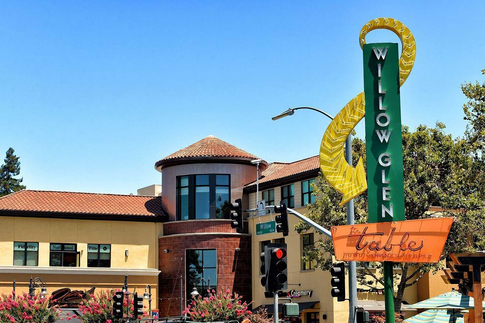

Willow Glen

What's it like living in Willow Glen?
Willow Glen is bordered on the north by Downtown San Jose, on the east and south by South San Jose, and on the west by West San Jose. When it comes to housing, Willow Glen has no shortage – there’s a great mix of subsidized housing, apartments, and single family homes. Homes in the area are an average of 50 years old, compared to an average of 20-30 years old in other parts of San Jose. However, they’ve been well maintained, remodeled, and updated for modern times. Classic exteriors of Victorian and Spanish styles from the 1920s can often be found mixed in with more modern styling, with beautifully remodeled modern interiors. Home prices also have a wide range and there are plenty of affordable and attractive homes for middle class residents here.

|
In addition, if you're a regular supporter of the arts and enjoy outings to the theatre, weekend boutique-ing, or even a finely aged wine with dinner, than you're in good company with the people of the Willow Glen neighborhood. This neighborhood is uniquely immersed with more "urban sophisticates" than 98.7% of neighborhoods across the country. The people here truly stand out as a class among their own. They are an exclusive community characterized by refined tastes, cultural inclinations, and the means to live well. Urban sophisticates live a big city lifestyle, whether or not they live in or near a big city. They are educated executives or managers by week, and serial patrons of the arts by weekend. If this lifestyle pertains to you, than you'll certainly feel right at home in the Willow Glen neighborhood. In addition to being an excellent choice for urban sophisticates, this neighborhood is also a very good choice for highly educated executives.
Schools
| San Jose Montessori School | Valley Christian Elementrary School | Willow Glen Middle School | Presentation High School |
Rating:
|
Rating:
|
Rating:
|
Rating:
|
Entertainment & Recreation |
Parks |
||||||||||||||||
|---|---|---|---|---|---|---|---|---|---|---|---|---|---|---|---|---|---|
|
|